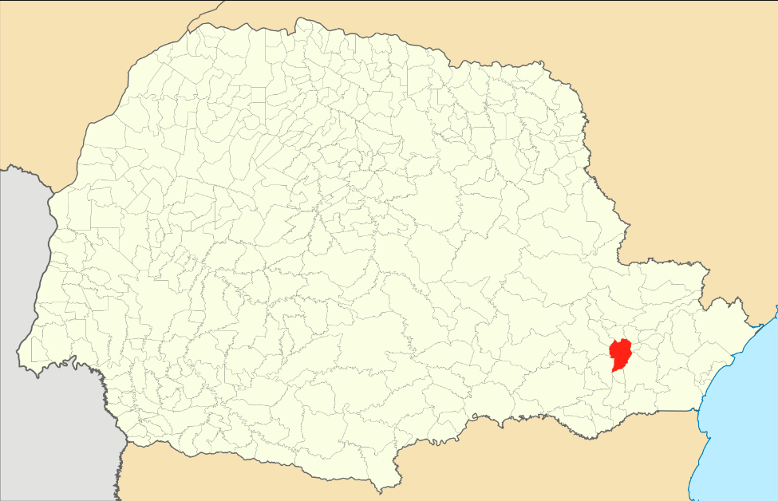
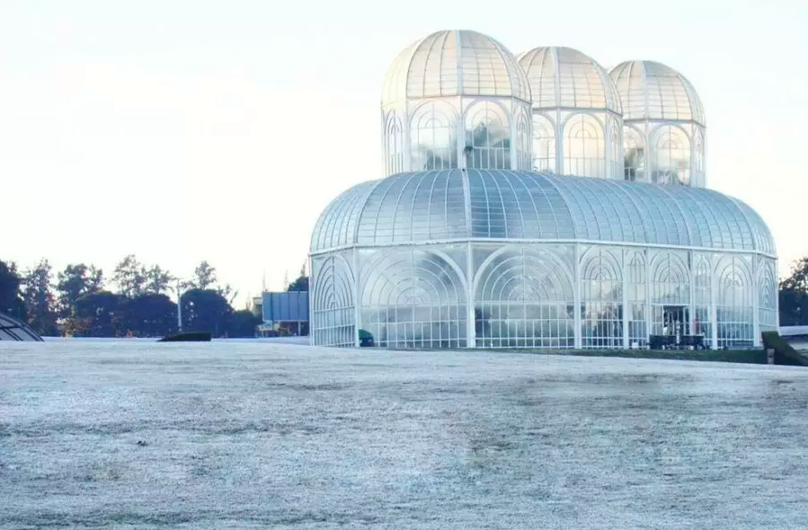

Localização
Curitiba é a capital do estado do Paraná, na região sul do Brasil. A Torre Panorâmica, que tem um observatório em sua parte superior, destaca-se na silhueta da cidade. Conhecida como centro cultural, Curitiba abriga vários espaços para apresentações, como a Ópera de Arame, uma estrutura de aço tubular com telhado transparente, e o enorme Centro Cultural Teatro Guaíra, que apresenta uma programação variada. ― Google
Elevação: 935 m
Área: 432 km²

Bacias hidrográficas Curitiba
Curitiba tem 6 bacias hidrográficas principais: Atuba, Belém, Ribeirão dos Padilha, Barigüi, Passaúna e Iguaçu – que coleta água diretamente e também recebe as águas drenadas das outras cinco bacias.
Clima: Frio
O motivo é justamente a sua localização, já que a distância dos trópicos faz com que a incidência solar seja menor nessa época do ano. No inverno, a inclinação da Terra deixa toda a região Sul mais distante do sol.
